支援BISとして必要なスキル（全てのスキルではありません・天使スキル含む）をまとめてみました。
以下
１．マスタ必須スキル （ブレ、エビ、エレメ、アーチ、祈り、賛美）
２．マスタ推奨スキル （ヒーリング、ディスペ、探索）
３．ある程度まで上げた方がよいスキル （リザ、PTH、ミラー、リカバリー）
４．１だけ取ればよいスキル、前提分でよいスキル （TU、TP、フルヒ、ジャッジ、コル、レスト、エバキュ、想起）
５．好みで自分がとっているスキル （ホリサク、ホリクロ、シルフラ、サンクチュアリ、郷愁）
の順でまとめています。
参考として、現在の私のスキル振りをのせます。
上記のうち、１・２・５はマスタ、それ以外もほぼ方針に沿って振っています。
不要と考えるスキルも一応１ずつとってみました。
現在はサンクを上げています。
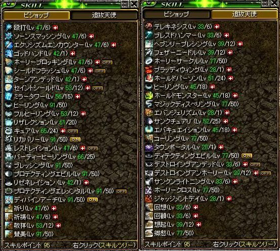
もう１つ、同様に参考として私の現在のスキルセットとスロットスキルをのせておきます。
・スキルセット
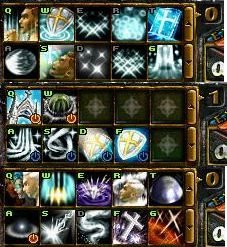
【BIS】
・セット０
上段：祈り、TU、ヒーリング、リザ、ミラー
下段：エビ、賛美、ブレ、フルヒ、PTH
・セット１
上段：アーチ、エレメ
下段：レスト、リカバリー、シルフラ、セイントシールド
０と１をTABキーで切り替えて使っています。
祈りは全く使ってないですが、昔の名残で置いてます。
【天使】
上段：コル、エバキュ、TP、郷愁、サンク
下段：探索、サンクン、ディスペ、ホリクロ、ジャッジ
郷愁は最近マスタ。以前は想起（プチヘイ）でした。
・スロットスキル
【BIS】 左上：エクソ 左下：エクソ 右上：なし 右下：なし
要するに全く使ってないです( ﾟｪﾟ)
【天使】 左上：ホリサク 左下：ホリサク 右上：ディスペ 右下：なし
ホリサクはワームの発生を防ぐために入れてます。
１．マスタ必須スキル
（ブレ、エビ、エレメ、アーチ、祈り、賛美）
| ■ブレッシング（ブレ） Bless |
難易度：２ |
【対象】 味方１人
【上昇形態】 HP上昇率、光ダメ威力、状態抵抗力、持続時間
【効果】
１．最大HPを上げる （SLｖ50で120％UP）
２．光ダメを付加する （知識/SLv依存、SLｖ50で1〜51）
３．状態異常抵抗を上げる （SLｖ50で150％UP）
|
【資料】
・持続時間： 60 + 6×SLv（秒）
・HP上昇： 22 + 2×SLv（％）
・状態異常抵抗上昇： 50 + 2×SLv（％） |
＜解説＞
言わずと知れた青わっかのスキル。
優秀な状態異常抵抗スキルでもある事は意外に知られていない。
マスタ必須。 |
| ■プロテクティングエビル（エビ） Protecting Evil |
難易度：３ |
【対象】 味方１人
【上昇形態】 防御力、低下抵抗力、持続時間
【効果】
１．防御力を上げる （SLｖ50で240％UP）
２．低下系抵抗を上げる （SLｖ50で160％UP）
|
【資料】
・持続時間： 80 + 9×SLv（秒）
・防御力上昇： 40 + 4×SLv（％）
・低下系抵抗上昇： 60 + 2×SLv（％） |
＜解説＞
ブレと並んでBIS基本スキルの１つ。
頭の上にこんなマークが表示される。
ブレ同様、優秀な低下系抵抗スキルである事はあまり知られていない。
ブレより少し持続時間が長い。
マスタ必須。 |
| ■プロテクティングエレメンタル（エレメ） Protecting Elemental |
難易度：４ |
【対象】 効果範囲内の自分を含むPTメンバー全員
【上昇形態】 魔法抵抗力、魔法攻撃上昇率、範囲
【効果】
１．純粋魔法攻撃（黄ダメのみによる攻撃）を上げる。
（SLｖ50で55％UP、100％でカンスト）
２．魔法抵抗を上げる （SLｖ50で65％UP）
３．各種異常抵抗を上げる （SLｖ依存なし、
呪い20％UP、低下35％UP、状態異常50％UP）
|
【資料】
・更新時間： 6秒
・魔法抵抗上昇： 15 + 1×SLv（％）
・純粋魔法攻撃力上昇： 5 + 1×SLｖ
・範囲： 3.5 + 0.2×SLｖ（ｍ）
・必要CP： 60 + 1×SLv |
＜解説＞
ON/OFFで行う、いわゆるリアクションスキル。
ONの時は頭の上にこんなマークが表示される。
一番の目玉は純粋魔法攻撃力上昇であり、
範囲狩場、あるいはGvでの範囲PTで大変重要な役割を果たす。
なお、この効果はSLv95でカンスト（100％）し、それ以上上げても変わらない。
マスタ必須。 |
| ■ディバインアーチ（アーチ） Divine Arch |
難易度：５ |
【対象】 効果範囲内の自分を含むPTメンバー全員
【上昇形態】 魔法抵抗力、SLｖ上昇率、範囲
【効果】
１．メンバの全てのSLｖを上げる
（SLｖ1で+1、25で+2、50で+3、75で+4。以降はずっと+4）
２．魔法抵抗を上げる （SLｖ50で85％UP）
３．各種異常抵抗を上げる （SLｖ依存なし、
呪い85％UP、低下90％UP、状態異常95％UP）
|
【資料】
・更新時間： 6秒
・魔法抵抗上昇： 10 + 1.5×SLv（％）
・SLｖ上昇： 1.0 + 0.04×SLｖ
・範囲： 4.0 + 0.1×SLｖ（ｍ）
・必要CP： 120 + 2×SLv |
＜解説＞
リアクションスキル。
ONの時は更新時間毎に窓から光が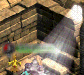差す。
SLｖの上昇、魔法抵抗、各種異常抵抗、どれをとっても非常に優秀。
それゆえに、難易度は5である。
マスタ必須。 |
| ■祈り Pray |
難易度：１ |
【対象】 自分
【上昇形態】 獲得量、キャスティング速度
【効果】
１．CPを獲得する。（SLｖ50で50、15フレ）
|
【資料】
・獲得量： 10 + 0.8×SLv
・casting速度： 20 - 0.1×SLv（flame） |
＜解説＞
200Lv台まで主にお世話になるCP獲得スキル。
「チャーン」というSEとこんなイフェクト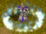で祈る。
獲得量は少ないが、消費がないので使い勝手がよい。
難易度も１でマスタしやすい。
マスタ必須だが、
高レベでは賛美しか使わなくなるため、再振りで前提のみにしてしまっても可。
また、スキル装備を多く用意できる人は、最初から賛美一本でいってもよい。 |
| ■賛美 Mass |
難易度：４ |
【対象】 自分
【上昇形態】
【効果】
１．CPを獲得する。（SLｖ50で340、35フレ）
２．集中力が一時的に上がる。
|
【資料】
・消費CP： 60
・獲得量： 100 + 6×SLv
・集中力上昇量： 15 + 0.5×SLv
・集中力上昇時間： 20 + 0.4×SLv（秒）
・casting速度： 65 - 0.6×SLv（flame） |
＜解説＞
特に高レベで活躍する、優秀なCP獲得スキル。
マスタするとチャージはこれ一本で行ける。
「チャーラーーラーー」というSEとこんなイフェクト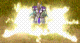で祈る。
SLvが低いうちはチャージが遅く、キャンセルを食らいやすくて使いにくいが、
マスタするとチャージ速度が飛躍的に上がり、CP獲得量も非常に多い。
さらに、SLv90を超えると祈りよりも早くチャージできるようになる。
マスタ必須。 |
２．マスタ推奨スキル
（ヒーリング、ディスペ、探索）
| ■ヒーリング Heal Wound |
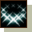
難易度：１ |
【対象】 味方１人
【上昇形態】 回復量、射程距離
【効果】
１．味方１人のHPを即時回復する。（SLｖ50で155）
|
【資料】
・消費CP： 2×SLｖ
・回復量： 5 + 3×SLv
・射程距離： 2.0 - 0.1×SLv（m） |
＜解説＞
BISの唯一の即時回復スキル。
WIZのアスヒと違い、ヒーリングは一定量回復なので
HPが大きく削られた時に効果が高い（アスヒは％回復）。
フルヒ、PTHとうまく使い分けると味方を死なせにくくなる。
主にGv用のスキルであるが、狩りでも活用できる。
マスタ推奨。 |
| ■マジックディスペリング（ディスペ） Magic Dispelling |
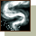
難易度：３ |
【対象】 敵１人
【上昇形態】 解除成功確率、CP減少量
【効果】
１．敵にかけられている各種補助魔法を解除する。
（SLｖ50で成功率125％）
２．CPを減少させる。 （SLｖ50で260）
|
【資料】
・消費CP： 15 + 1×SLｖ
・補助解除確率： 75 + 1×SLv（％）
・CP減少量： 10 + 5×SLｖ
|
＜解説＞
Gvで活躍する天使スキル。CPをチューチューと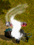吸う。
吸うと言ってもその分こちらのCPが増えるわけではなく、むしろ消費する。
さらに低下抵抗のない敵は、ブレエビエンヘイなど各種補助をはがされる。
いやがらせスキルの代表格だが、実際やってみるとなかなか楽しい。
吸ってきた天使を逆に吸い返してBISに戻してやった時など、快感である。
あまり楽しいからといってみんな天使になるとPTがピンチになるのでほどほどに。
マスタ推奨。
|
| ■ディテクティングエビル Detecting Evil |
難易度：１ |
【対象】 フィールドマップ
【上昇形態】 範囲
【効果】
１．周辺の敵を探知する（SLｖ50で16.5m）
|
【資料】
・更新間隔： 6秒
・消費CP： 2.0 + 0.2×SLｖ
・索敵量： 25 + 5×SLｖ
・範囲： 4.0 + 0.25×SLv（m） |
＜解説＞
通称「探索」とも呼ぶ、主にGvでの敵探索用のリアクションスキル。
敵位置の情報は右上のミニMAPに赤い点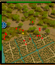で表示される。
更新時間ごとにこんなイフェクトが出る。
SLｖが低いうちは範囲がせまくてほとんど見えないが、
マスタするとエルンのMAP全体ぐらいの範囲が見えるようになる。
更新間隔が長いため今ひとつ精度に欠けるが、それでも十分役に立つ。
クエのMOB探し（ポタクエ４のリトルエントなど）にも使える。
本体LvとSLｖによって探索出来る敵のLvが制限されるらしい。
マスタ推奨。 |
３．ある程度まで上げるべきスキル
リザ、PTH、ミラー、リカバリー
| ■リザレクション（リザ） Resurrection |
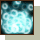
難易度：５ |
【対象】 味方１人
【上昇形態】 HP回復量、デスペナ回復量
【効果】
１．味方１人を蘇生させる。
SLｖが高くなるとデスペナの時間を減らせる。
（SLｖ51で100％カット）
|
【資料】
・消費CP： 100 + 7×SLｖ
・HP回復量： 10×SLｖ
・デスペナ回復量： 2×SLv - 2（％） |
＜解説＞
BISの主要スキルの１つ。
重要なスキルだけに難易度は５。
消費CPが大きいため、PT壊滅状態から立て直すのはなかなか骨が折れる。
勝手に突っ込んで寝転がっている勇者様に「リザおね」などと言われ、
「『おね』じゃねえ『お願いします』だ、寝転がってる分際で省略すんなバカヤロウ」
と心の内外でキレているBISが、1日のべ100人ぐらいいると予想される。
補正込み51↑推奨。 |
| ■パーティーヒーリング（PTH） Party Heal |
難易度：５ |
【対象】 範囲内の自分を含むPTメンバー全員
【上昇形態】 HP回復量、範囲
【効果】
１．範囲内にいるPTメンバー全員のHPを回復する。（SLｖ50で750）
|
【資料】
・消費CP： 90 + 5×SLｖ
・HP回復量： 15×SLｖ
・範囲： 3.0 + 0.1×SLｖ |
＜解説＞
BISの主要スキルの１つ。
回復量が15×SLｖのため、ある程度上げないと使いにくい。
逆に上げすぎると消費CPが大きくなり、これまた使いにくい。
素で20〜30ぐらいで止めておくのがお勧め。 |
| ■ミラータワー（ミラー） Mirror Tower |
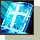
難易度：５ |
【対象】 味方１人
【上昇形態】 反射ダメ倍率、魔法抵抗力、追加CP獲得、持続時間
【効果】
１．味方への魔法ダメージを一部自分に反射させる。
（SLv33で95％反射、以降は95％）
２．自分の魔法抵抗力上昇（SLｖ50で125％）
３．魔法ダメージに応じたCP獲得がある。（SLｖ50で30％）
|
【資料】
・消費CP： 150
・反射ダメ倍率： 30 + 2×SLｖ（MAX95％）
・魔法抵抗力上昇： 25 + 2×SLv（％）
・CP追加獲得： 5 + 0.5×SLｖ（％）
・有効距離： 4.0 + 0.05×SLｖ（ｍ）
・持続時間： 120 + 6×SLｖ（秒） |
＜解説＞
対魔法ダメに対し、非常に強力な防御になるスキル。
5枚まで与えられるが、全部与えると上書きが出来なくなるため、
基本的には4枚まででかけていこう。
あまり考えなしに抵抗低い人に与えまくると反射ダメで自分が死ぬ、いわゆる
「ミラー死」するので注意。
補正込みで20〜40ぐらいにしておくのがおすすめ。
|
| ■リカバリー Freedom |
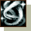
難易度：２ |
【対象】 範囲内の自分を含むPTメンバー全員
【上昇形態】 移動速度、攻撃速度、有効範囲
【効果】
１．PTメンバーの状態異常・低下を治す。
２．自分の移動速度･攻撃速度が上がる。（SLｖ50で30％）
|
【資料】
・必要CP： 5 + 1×SLv
・充電CP： 0.5×SLｖ
・行動速度： 5 + 0.5×SLｖ（％）
・有効範囲半径： 4.0 + 0.1×SLv（ｍ）
＜参考＞ヘイスト
・移動速度： 20 + 1.5×SLｖ（％）
・攻撃速度： 10 + 0.5×SLv（％） |
＜解説＞
リアクションスキル。
攻速・移動速度を上げてくれるというのがこのスキルの目玉。
それなりに上げておくと、ヘイがない時の移動などに重宝する。
またヘイと違って、ONにしてる限りずっとかかったままなのもよい。
参考までに、
SLｖ30で 攻速：ヘイ20、移速：ヘイ1 相当
SLｖ50で 攻速：ヘイ40、移速：ヘイ7 相当
素で30以上推奨。
|
４．１だけ取ればよいスキル、前提でOKのスキル
（TU、TP、フルヒ、コル、レスト、エバキュ、ジャッジ、想起）
| ■ターンアンデッド（TU） Turn Undead |
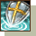
難易度：２ |
【対象】 範囲内のアンデッド系MOB全て
【上昇形態】 キャスティング速度、有効半径
【効果】
１．一定範囲のアンデッド系のMOBを逃亡・麻痺・即死させる。
|
【資料】
・消費CP： 15
・キャスティング速度：
4 - 0.025×SLｖ（秒）
・有効半径： 2.00 + 0.05×SLv（m）
・持続時間： 逃亡 5秒、麻痺 1秒
・逃亡： 本体＋SLｖ 以下のMOB 100％
・麻痺： 本体＋SLｖ-15 以下 75％
・即死： 本体＋SLｖ-45 以下 40％ |
＜解説＞
以前はTUによる即死狩りや、ソロ用にマスタ推奨のスキルだったが、
TUによる即死狩りが出来なくなったり、秘密が実装されてTUソロの必要性が薄れてきているなどの事情があり、現在では主に釣り用スキルとして使用する。
よって１あればOK。
アンデッド系のMOBに使うと釣りどころか逆に逃げていくので注意。
遺跡内周では柱の少し外からTUを打って範囲の中にMOBを逃亡させる、あるいは麻痺させて範囲にタゲが集中するのを防ぐ、といったテクニックもある。
※2008/10/03追記
モリネル６F中央PTで「塔のぜんまい」を倒すためにTUが必要になった。
（690−自分の本体Lv）分のSLｖが必要。
|
| ■タウンポータル（TP） Town Portal |
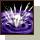
難易度：５ |
【対象】 フィールドマップ
【上昇形態】 ポータル持続時間、移動距離
【効果】
１．町へのポータルを出す。自分以外のプレイヤーも利用可能。
（SLｖ50で持続時間54秒）
|
【資料】
・消費CP： 500 + 3×SLｖ
・獲得CP： 12×SLv
・キャスティング速度：
10 - 0.5×SLｖ（MIN 0.5秒）
・成功率： 60 + 1×SLｖ（％）
・ポータル持続時間： 4 + 1×SLv（秒）
・移動限界フィールド数： 4 + 3×SLｖ
・記憶村数： 1.0 + 0.4×SLｖ
|
＜解説＞
町へのポータルを出す便利スキル。
コル同様、「ポタ出してー」と他職からよく頼まれる。
BISがメインの人は基本的にドMなので
頼まれれば二つ返事で出してくれる事がほとんどだが、
BISだって人間、機嫌の悪い時もある。
ポータルが出たからと言って何でもほいほい入っていると
ダメルへの片道切符だったりするので注意。
補正で大体はどこでも行けるようになるので、１あればOK。
|
| ■ジャッジメントデイ（ジャッジ） Judgement Day |
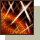
難易度：５ |
【対象】 範囲内の敵/味方全て
【上昇形態】 光攻撃力、範囲、
【効果】
１．範囲内の敵全てに光ダメージを与える。（知識/SLv依存）
２．範囲内の味方全ての呪い・低下・状態異常を治療する。
|
【資料】
・消費CP： 100 + 6×SLv
・光攻撃力： 1 〜15.5×SLｖ
・有効範囲半径： 5.0 + 0.03×SLｖ（ｍ）
・PTメンバの全ての状態異常回復 |
＜解説＞
ホリクロ（ホーリークロス）と並ぶ天使の範囲攻撃スキルだが、
支援BISでのジャッジは主にGvでの各種状態異常回復が目的。
Gvで天使をやる際に時々打つと重宝される。
特にレクイエムがきつそうな場合はちょくちょく打つとよい。
１あればOK。
|
| ■フルヒーリング（フルヒ） Restoration |
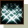
難易度：２ |
【対象】 味方１人
【上昇形態】 射程距離、回復量
【効果】
１．味方１人のHPを多く回復する。（SLｖ50で1535）
|
【資料】
・消費CP： 15 + 4×SLｖ
・回復量： 35 + 30×SLv
・射程距離： 3.5 + 0.1×SLv（m） |
＜解説＞
最初の方に覚えるBISの回復スキル。
前提だけでも大体PTHの倍ぐらい回復するので、
1人だけ集中的に回復させたい時はこれで行うのがよいだろう。
前提分（Slv12）でOK。
|
| ■コーリング（コル） Calling |
難易度：４ |
【対象】 移動限界フィールド内のPTメンバー全員
【上昇形態】 移動距離、成功率
【効果】
１．PTメンバー全員を自分の所に呼ぶ。（SLｖ40で成功率100％）
|
【資料】
・消費CP： 300 + 1.5×SLｖ
・獲得CP： 7×SLv
・キャスティング速度： 10（フレ）
・成功率： 60 + 1×SLｖ（％）
・移動限界フィールド数： 3 + 2×SLｖ
|
＜解説＞
狩り、Gv共に最も重要なスキルのうちの１つ。
SLｖが低いうちは消費でかい、失敗多い、遠くまで届かない、と
非常にしんどいが、
SLv40で成功率100％になり、コル失敗地獄から脱出。
SLv55を超えると獲得＞消費となり、コルするとCPが増えるようになる。
届く範囲も広くなり、SLv80ぐらいあるとアリアンから塩B8でも届く。
このように高レベでは大変快適で素晴らしいスキルなのだが、
支援BISは他に上げなければいけないスキルが多く、
400を超えてからでないと本格的に上げていくのは難しい。
低レベのコルは本当にしんどい。
成功率60％以上あるくせに5回連続ミスなど日常茶飯事。
1回のコルでCP300以上消費、しかもマイナスになるとBISに戻ってしまう。
神殿でテンプラに襲われながら7回連続ミスとか、もう泣きそうである。
他職の諸兄にはこのような事情をぜひとも理解しておいていただきたい。
こんな状態でリザ同様、「コルおね」などと無礼に略す輩は
リアルファイトフィールドにコルしたくなる。
基本的にはTPの前提分でOK、ただしマスタすると大変快適。
|
| ■レストレイション（レスト） Redemption |
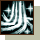
難易度：３ |
【対象】 範囲内の自分を含むPTメンバー全員
【上昇形態】 範囲
【効果】
１．範囲内PTメンバーの呪い、低下、状態異常を治す。
|
【資料】
・必要CP： 30 + 2×SLv
・充電CP： 0.7×SLｖ
・有効範囲半径： 5.0 + 0.05×SLv（ｍ）
|
＜解説＞
リアクションスキル。
更新時間毎に各種状態異常を回復してくれる。
Gvのリアクションスキルはアーチ・エレメかアーチ・レストかの組み合わせになる。
場合に応じて使い分けよう。
前提分でOK
|
| ■エバキュエイション（エバキュ） Evacuation |
難易度：２ |
【対象】 自分
【上昇形態】 キャスティング速度、成功率、移動距離
【効果】
１．町へ移動する。（SLｖ40で成功率100％）
|
【資料】
・消費CP： 150 + 0.5×SLｖ
・獲得CP： 3.5×SLv
・キャスティング速度：
3 - 0.5×SLｖ（MIN 0.5秒）
・成功率： 60 + 1×SLｖ（％）
・移動限界フィールド数： 2 + 1×SLｖ
・記憶村数： 1.0 + 0.2×SLｖ
|
＜解説＞
町移動の便利なスキル。
成功すると画面右に移動できる町の一覧が出て、それから選ぶ。
コル同様、低レベのうちは妙に失敗が多い。
基本的には前提分でOK、好みで25ぐらいまで上げてもよい。
|
| ■想起 Reminiscence |
難易度：３ |
【対象】 自分・味方全体
【上昇形態】 キャスティング速度
【効果】
１．CPを獲得する。（SLｖ50で170、30フレ）
２．PTメンバー全体の攻撃速度・移動速度が一時的に上がる。
（各30％UP、20秒、固定）
|
【資料】
・獲得CP： 50＋2.4×SLv
・キャスティング速度：
45 - 0.3×SLｖ （flame）
・効果範囲： 5m（固定）
|
＜解説＞
別名プチヘイと呼ばれる、天使のチャージスキル。
このスキルの最大の特長は、PT全体の攻速・移速を上げる事である。
攻速がヘイ40相当、移速がヘイ6相当。
郷愁と違ってSLｖに依存せず固定なので、
1でもとれば上記のヘイ効果が得られるのが大きい。
ちなみに郷愁でこの速度効果を出すためにはSLv60まで上げる必要がある。
CPチャージ自体は郷愁が圧倒的に優秀なのでそちらを使う事になるが、
上記の理由からかなり高レベまでお世話になるスキルだ。
同じく上記の理由により、SLvを上げる必要はなく、
前提分でOK。
|
５．好みで自分が上げているスキル
（ホリサク、ホリクロ、シルフラ、サンク、郷愁）
| ■ホーリーサークル（ホリサク） Holy Circle |
難易度：３ |
【対象】 敵１人
【上昇形態】 光攻撃力、攻撃速度、低下持続時間
【効果】
１．敵１人に対し光攻撃を行う。（知識/SLv依存）
SLｖを上げていくと攻速が上がる。（SLｖ50で攻速30％UP）
２．攻撃した敵の命中/回避を一定時間低下させる。（SLv50で27秒）
|
【資料】
・消費CP： 30 + 2.5×SLv
・獲得CP： 3×SLｖ
・光攻撃力：
20 + 2×SLv 〜 20 + 5×SLｖ
・攻撃速度上昇： 0.6×SLｖ（％）
・命中/回避低下： 2.0 + 0.5×SLv |
＜解説＞
血羽（ブラッディウィング）と並んで天使の使いやすい単体攻撃スキル。
「ピッピッ」とホイッスルのようなSEを出す。
スキルを上げていくと攻撃速度が上がるのが特徴。
SLｖ60を超えると獲得＞消費となる。
秘密のポタ出しなどで使えるため、
他の必要スキルがそろったら上げていくとよいだろう。
マスタすると便利。
|
| ■ホーリークロス（ホリクロ） Holy Cross |
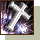
難易度：５ |
【対象】 範囲内の敵全て
【上昇形態】 光攻撃力、HP回復量、範囲
【効果】
１．範囲内の敵全てに光ダメージを与える。（知識/SLv依存）
２．範囲内の味方全てのHPを回復する。（知識/SLv依存）
|
【資料】
・消費CP： 150 + 4×SLv
・光攻撃力： 1 〜14.5×SLｖ
・有効範囲半径： 5.0 + 0.02×SLｖ（ｍ）
・HP回復量： 50 + 5×SLｖ |
＜解説＞
天使の有名な範囲攻撃スキル。
ちょっと悲しげなSEで発動する。
意外にダメが強く、光弱化50％の十字架をつけておけば
知識200ぐらいでも最高で8000ぐらい出る。
ただし、他職の範囲と違ってダメ範囲がやたら広い（最低ダメが2とかなる）ので
あまり期待してはいけない。
PTHの効果もあるので、Gvでずっと天使になっている場合は使えるスキルの１つ。
難易度5のため覚えるのが大変だが、高レベではマスタしたいスキルだ。
マスタすると便利。
|
| ■シールドフラッシュ（シルフラ） Shield Flash |
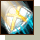
難易度：２ |
【対象】 攻撃者１人
【上昇形態】 光ダメ、ブロック率、暗闇発動確率
【効果】
１．盾のブロック率を増加させる。（SLｖ50で29％増加）
２．ブロックした際、光ダメ（知識依存）を攻撃者に与える。
３．一定確率で攻撃者を暗闇状態にする。（SLｖ50で90％）
|
【資料】
・消耗CP： 10
・充電CP： 5.0 + 0.3×SLｖ
・盾ブロック率増加： 4.0 + 0.5×SLｖ（％）
・光ダメ： 1 〜 6.5×SLｖ
・暗闇確率： 40 + 1×Slv（％）
・暗闇時間： 3（秒）
|
＜解説＞
リアクションスキル。
敵に攻撃された時に一定確率で発動するという、
これぞまさにリアクションスキルである。
昔はこれで狩る、殴りBISならぬ「殴られBIS」という素敵なカテゴリーが
存在したが、シルフラ放置で通報されるなど狩場でのトラブルが多かったため
廃れてしまった。
相手の抵抗に関わらず一定確率で相手を暗闇にする事が出来るため、
Gvでタコ殴りされた時の対抗策として効果がある。
ブロック率の高い盾と併用するとよいだろう。
高レベでマスタを目指してみるとよいかも。
|
| ■サンクチュアリ（サンク） Sanctuary |
難易度：２ |
【対象】 自分
【上昇形態】 移動速度、持続時間
【効果】
１．一定時間無敵状態になる。ただし、
歩行以外の全ての行動が不能になる。
|
【資料】
・消耗CP： 15 + SLv
・持続時間： 15 + 0.5×SLv（秒）
・移動速度変動量： -20 + 0.6×SLv（％）
|
＜解説＞
天使の無敵スキル。イフェクトの見た目から「卵」とも言われる。
BISと違い、天使は盾がないのでタゲをもらった時に沈みやすい。
よって、危険な時はサンクを発動させる事により攻撃回避を行う。
SLｖを上げる事により、持続時間と移動速度が上がっていく。
注目は移動速度UPで、マスタすると妙に素早く歩けるようになる。
歩行とはいえGvにおいて移動速度が上がるのは大きく、色々な行動が
楽になると自分は考える。
高レベでマスタを目指してみるとよいかも。
ちなみに、ドラコリッチのゾンビ攻撃対策にもなる。
ゾンビ攻撃を食らった際に、サンクを発動すると
10秒立ってボーン！となっても、なぜか死なずにピンピンしている。
お手伝いによく行く人は覚えておくとよいだろう。
|
| ■郷愁 Nostalgia |
難易度：４ |
【対象】 自分・味方全体
【上昇形態】 キャスティング速度、全体速度、持続時間
【効果】
１．CPを獲得する。（SLｖ50で450、35フレ）
２．PTメンバー全体の攻撃速度・移動速度が一時的に上がる。
（SLｖ50で各25％UP、35秒）
|
【資料】
・獲得CP： 100＋7×SLv
・キャスティング速度：
65 - 0.6×SLｖ （flame）
・攻速・移速上昇率：
0.5×SLｖ（％）
・攻速・移速上昇持続時間：
10 + 0.5×SLｖ（秒）
・効果範囲： 6m（固定）
|
＜解説＞
天使の主力チャージスキル。
全職中、最高のCP獲得量を誇る。
攻速・移速の効果はSLｖ60までは想起（プチヘイ）に譲るが、
そこから先はどんどん伸び、
SLｖ80で攻速がヘイ60相当、移速ヘイ13相当の17フレ、50秒
SLｖ90で攻速がヘイ70相当、移速ヘイ16相当の11フレ、55秒
SLｖ100で攻速がヘイ80相当、移速ヘイ20相当の5フレ、60秒
と、すばらしい能力になっていく。
賛美同様、キャスティング速度がすごい角度で上がっていくので、
高レベでは非常に快適なスキルだ。
高レベでマスタを目指したい。
|